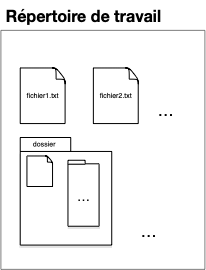
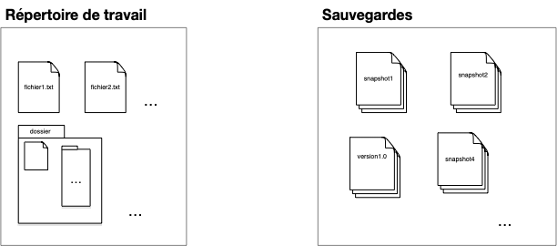
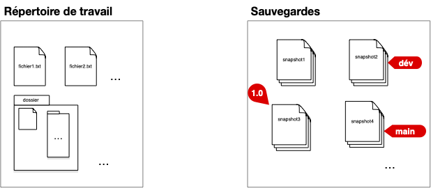
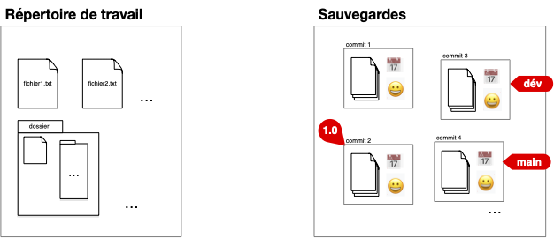

Besoins
Examinons les besoins et les cas d'usage que devrait couvrir un SCM. De ces usages et besoins vont découler une architecture et des protocoles à mettre en place.
Working directory
Supposons que notre projet soit de travailler sur un ensemble de documents (e.g. du code) regroupés au sein d'un répertoire de travail (working directory) dont le contenu évolue au cours du temps :

Pour se fixer les idées :
- Téléchargez le dossier suivant contenant un projet python de 3 fichiers : le projet Numérologie
- Créez un projet vscode avec ces différents fichiers et exécutez le fichier
main.py
Snapshots
Pour pouvoir modifier ses documents sans avoir peur de faire des erreurs, on peut épisodiquement sauvegarder tout le contenu du répertoire de travail (faire un snapshot) :

Tags
Cette première organisation permet de faire une sauvegarde avant une modification, ou de garder des versions précédentes du projet. Le nom de la sauvegarde permet de tracer les étapes importantes du projet (version1 par exemple dans la figure ci-dessus).
Le nom du fichier de sauvegarde étant unique, il ne permet pas de stocker plus d'une information (la version 1.0 pouvant être la version courante du projet par exemple). Une première amélioration de notre structure est d'ajouter des labels (tags) qui permettent de caractériser, si besoin, des sauvegardes :

La version 1.0 à son propre tag. Le tag main correspond à la version courante (par exemple une correction de bug de la 1.0) et le tag dev àla version de développement avec des ajouts de fonctionnalités par rapport à la version courante.
Numérotation standard des versions appelée Gestion sémantique de version (semver).
Commits
En utilisant un dossier partagé (un drive par exemple) si le projet est effectué par plusieurs personnes, chaque snapshot du dossier est associé :
- au moment où cette sauvegarde à été effectuée : QUAND
- à l'utilisateur qui a sauvegardé le dossier : QUI
Formalisons ceci avec la notion de commit, qui est constitué :
- d'une sauvegarde du répertoire de travail (un snapshot du working directory)
- de QUI a effectué cette sauvegarde
- de QUAND a été effectué cette sauvegarde
